Soft, pillowy layers of buttery dough swirled with warm cinnamon, topped with a rich glaze that melts into every crevice.
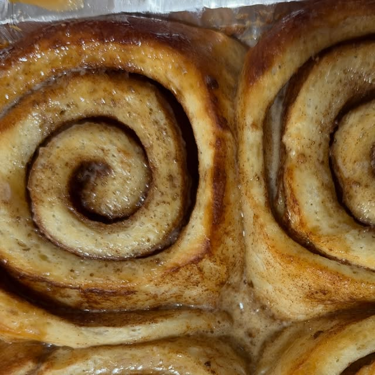
fresh from the cottage kitchen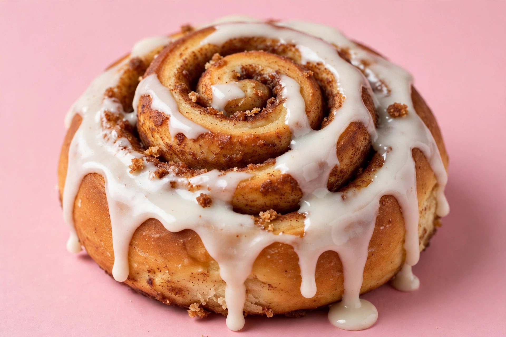
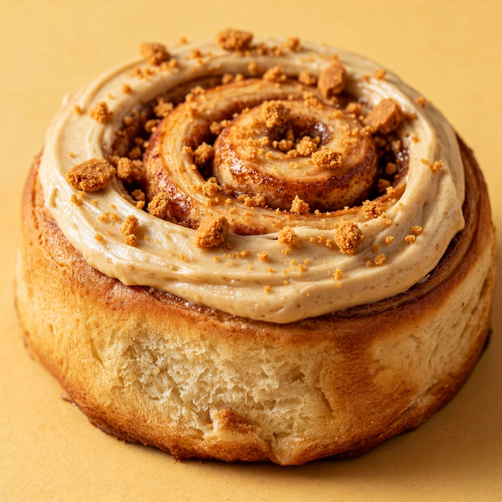
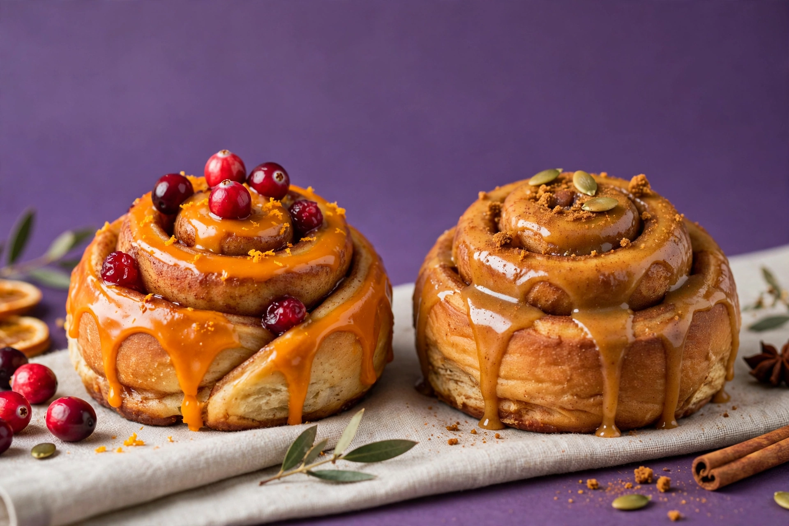
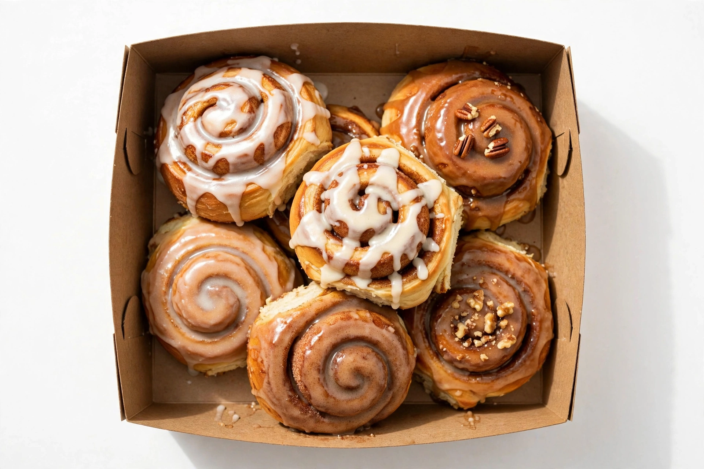
Whatever you call us,
Carrie
Bethany
Besties
My Besties
Besties always had a way of making moments a little sweeter — over 60 years of cooking experience combined, and decades of friendship in every swirl.
Meet the BestiesCinnamon Buns
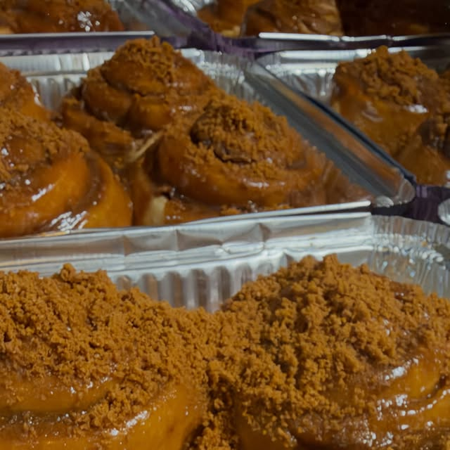
The same incredible cinnamon goodness, taken up a level with luscious cookie butter topping and a Biscoff cookie crumble.
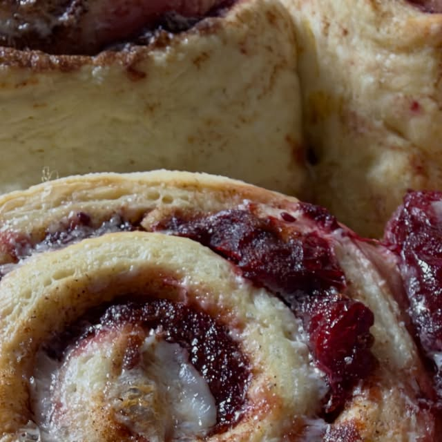
From the test kitchen: tart cranberry folded through the swirl, finished with a bright orange glaze.
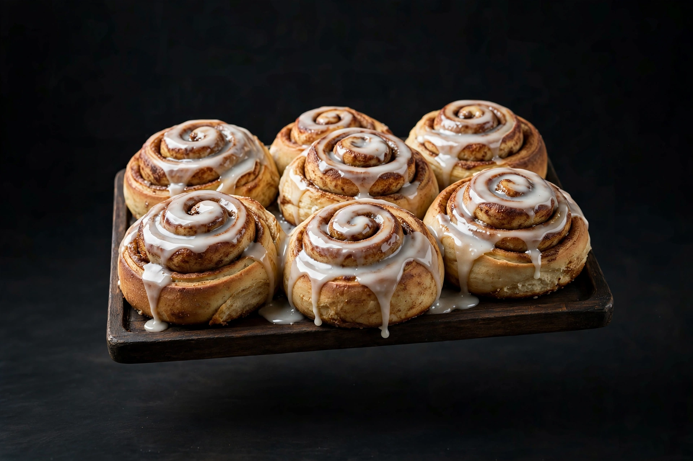
From the test kitchen: warm pumpkin spice in every layer, finished with a maple glaze.
Test Kitchen Buns
Baked in the BBs test kitchen — cranberry buns with orange glaze, fresh from today's research.
Baked in the BBs test kitchen — pumpkin spice buns with maple glaze.
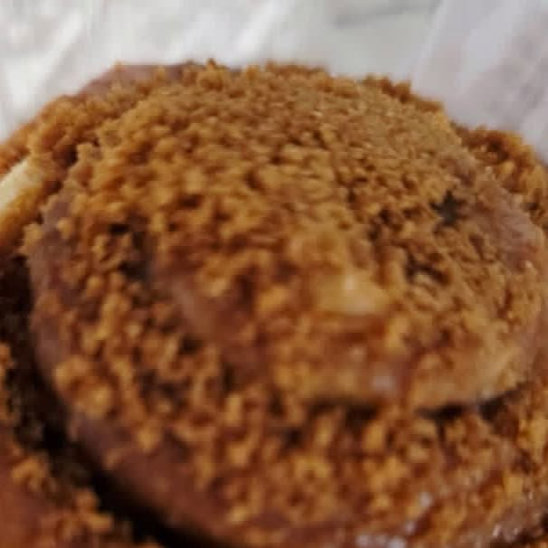
The test-kitchen favourite that made the menu — cookie butter topping, Biscoff crumble.
The original every experiment is measured against. Soft, buttery, warm cinnamon.
Seasonal Buns
Autumn's bun — pumpkin spice swirled through pillowy dough, maple glaze on top.
The Thanksgiving bun — cranberry and orange, baked for porch pickup in Hazel Park.
Cookie butter and Biscoff crumble — indulgence, whatever the season.
Every season, every sale — the OG that ruined ordinary cinnamon buns for our customers.
Bun Boxes
Pre-order, pre-pay, porch pickup in Hazel Park — Wednesday or Thursday, 10am to noon.
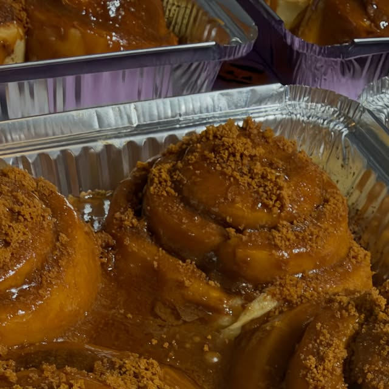
From our first market on November 14 — the box besties take home by the tray.
OG and Cookie Butter together — two flavours, two ridiculously good reasons to forget counting calories.
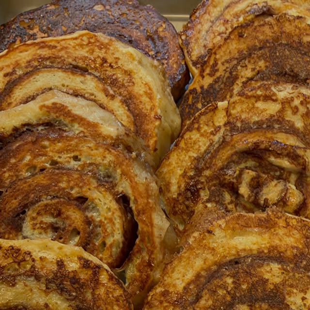
Leftover buns make the most delicious French toast. No syrup required.
Let dough speak for itself
Two lifelong best friends in a Michigan cottage kitchen bring together real butter, warm cinnamon and decades of friendship to create bold, irresistible buns. Every tray is handmade — you will never see us using AI — with quality ingredients, attention to detail, and a whole lot of love. Our goal is simple: fresh, homemade buns that bring people together and make every bite feel a little special.
- Handmade, always
- Real butter
- No AI, ever
- Small batch
- 60+ years combined experience
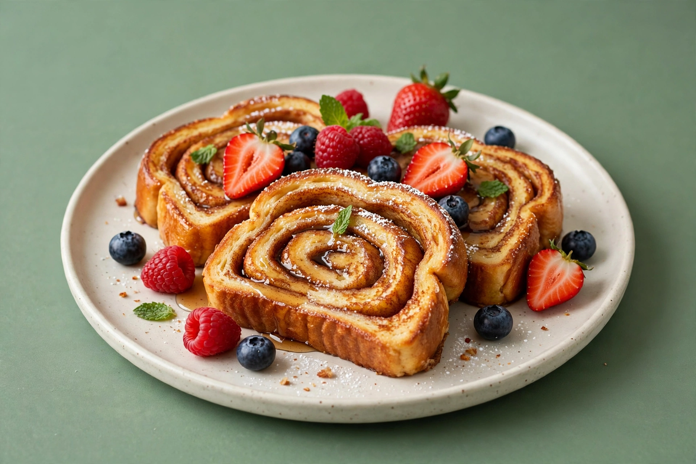
Warm your buns — the handy guide
Air fryer: low, around 225°, five minutes. Microwave: 30 seconds, Chef Mike style. Oven: 350°, loosely covered in foil, 15 minutes. Still delicious on day 4 — and leftovers make the best French toast.
“Well, Bestie's Buns might have just ruined ordinary cinnamon buns for me!” — Jon, customer